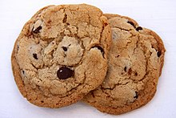

Chocolate Chip Cookie Recipe

Description:
A chocolate chip cookie is a drop cookie that features chocolate chips or chocolate morsels as
its distinguishing ingredient. Chocolate chip cookies originated in the United States around
1938, when Ruth Graves Wakefield chopped up a Nestlé semi-sweet chocolate bar and added the
chopped chocolate to a cookie recipe.
Ingredients:
- 1 cup butter, softened
- 1 cup white sugar
- 1 cup packed brown sugar
- 2 eggs
- 2 teaspoons vanilla extract
- 1 teaspoon baking soda
- 2 teaspoons hot water
- ½ teaspoon salt
- 3 cups all-purpose flour
- 2 cups semisweet chocolate chips
- 1 cup chopped walnuts
Steps:
- Preheat oven to 350 degrees F (175 degrees C).
- Cream together the butter, white sugar, and brown sugar until smooth. Beat in the eggs one
at a time, then stir in the vanilla. Dissolve baking soda in hot water. Add to batter
along with salt. Stir in flour, chocolate chips, and nuts. Drop by large spoonfuls onto
ungreased pans.
- Bake for about 10 minutes in the preheated oven, or until edges are nicely browned.